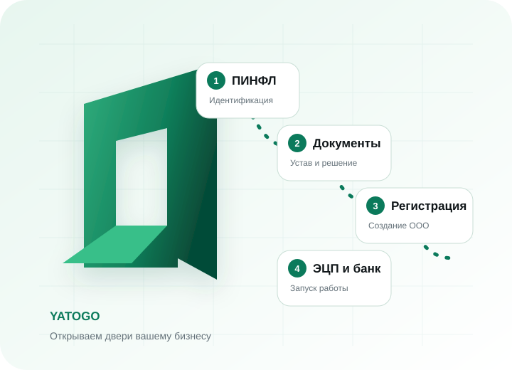

Полностью дистанционное оформление возможно не во всех ситуациях. Часть действий можно передать представителю по доверенности, однако требования к личному присутствию и идентификации зависят от конкретного этапа, статуса директора и выбранного банка.
Можно ли россиянину открыть ООО в Узбекистане
Да. Гражданство России само по себе не запрещает физическому лицу участвовать в ООО, зарегистрированном в Узбекистане. Закон об ООО называет участниками общества юридические и физические лица. Общество может быть учреждено одним лицом или несколькими участниками.
Иностранный учредитель соблюдает корпоративные правила общества, а также дополнительные требования, которые могут возникнуть из-за иностранного паспорта, банковской проверки или фактической работы иностранца директором.
Нужно ли приезжать лично
Не всегда, но обещать полностью дистанционный процесс без изучения ситуации нельзя. Официальный портал государственных услуг указывает, что иностранный гражданин может получить ПИНФЛ через доверенное лицо.
Наиболее частая точка, где возникает вопрос личного присутствия, — банк. Центральный банк отдельно описывает дистанционное открытие счетов для юридических лиц, учредителями которых являются резиденты Узбекистана. Поэтому иностранному учредителю не следует считать, что любой банк откроет счёт полностью удалённо.
Какие документы понадобятся
Точный комплект зависит от состава учредителей, директора, вида деятельности и способа подачи. Для физического лица обычно готовят:
- действующий паспорт и, когда требуется, перевод;
- ПИНФЛ или сведения для его получения;
- решение единственного учредителя либо протокол;
- устав и другие учредительные документы на государственном языке;
- сведения о названии, адресе, деятельности и директоре;
- доверенность, если действует представитель.
Если учредитель — иностранная компания, понадобится отдельный корпоративный комплект. Требования к легализации, апостилю, переводу и сроку действия проверяют применительно к стране выдачи.
Получение ПИНФЛ
ПИНФЛ — уникальный 14-значный идентификатор физического лица. Он присваивается один раз и не меняется при замене паспорта.
По информации Единого портала, иностранный гражданин может обратиться лично в Центр государственных услуг, через доверенное лицо либо в подразделение миграции по месту регистрации. Для представителя нужна доверенность. Официальный ориентир срока — 2–4 рабочих дня.
Юридический адрес
ООО должно иметь место нахождения и почтовый адрес для связи. До подачи документов проверяют основание использования помещения, возможность получать корреспонденцию и требования банка или лицензирующего органа.
Формальный адрес без реальной возможности связи создаёт риски при банковской проверке и получении официальных уведомлений.
Директор ООО
Учредитель и директор — разные роли. Если иностранный гражданин будет выполнять трудовую функцию в Узбекистане, могут применяться миграционные и трудовые требования.
На Едином портале существует отдельная услуга получения подтверждения права на трудовую деятельность. Для неё указываются паспорт, проект трудового договора, фотография и документы о квалификации; официальный срок — до 15 рабочих дней.
Регистрация компании
После подготовки данных заявление подаётся через систему государственной регистрации. Для учредительных документов указывается государственный язык.
На портале срок обработки корректного заявления обозначен как работа в режиме реального времени, но не более 30 минут. Этот показатель не включает ПИНФЛ, переводы, доверенность, адрес, ЭЦП, трудовые процедуры и банковскую проверку.
ЭЦП
Электронная цифровая подпись используется для государственных и налоговых сервисов. Возможность дистанционного получения иностранцем зависит от идентификации, ПИНФЛ, номера телефона и актуальных правил системы.
Заранее определяют владельца ключа, разрешённые операции и порядок замены при смене директора. Пароль и закрытый ключ нельзя отправлять посторонним через мессенджеры или почту.
Открытие банковского счёта
Счёт открывается после регистрации ООО и проверки банка. Обычно проверяются директор, участники и бенефициары, виды деятельности, предполагаемые операции, происхождение средств, контрагенты и адрес.
Конкретный перечень документов и формат идентификации различаются. Иностранный учредитель и международные платежи могут увеличить срок комплаенс-проверки. Регистрация ООО не означает автоматического открытия счёта.
Сколько занимает регистрация
Разделяйте сроки отдельных процедур:
- ПИНФЛ: официальный ориентир 2–4 рабочих дня;
- государственная регистрация корректного заявления: до 30 минут;
- подготовка документов, ЭЦП и доступов: зависит от ситуации;
- право на трудовую деятельность, если требуется: до 15 рабочих дней;
- банковский счёт: по срокам выбранного банка.
YATOGO сопровождает проект от 2 рабочих дней при готовых исходных данных. Окончательный график зависит от документов, разрешительных процедур и банка.
Сколько стоит открыть ООО
Единой суммы нет. В расчёт могут входить государственные сборы, переводы, доверенность, адрес, ЭЦП, банковские услуги, разрешения для директора и сопровождение.
Размеры сборов меняются, поэтому YATOGO рассчитывает стоимость индивидуально после проверки учредителей, деятельности, директора, адреса и выбранного формата оформления.
Можно ли открыть ООО удалённо
Через представителя можно получить ПИНФЛ, подготовить и подать корпоративные документы, организовать адрес и сопровождать регистрацию. Но личное присутствие или видеоидентификация могут потребоваться для отдельных электронных инструментов, трудового статуса директора и банка.
Безопасный подход — сначала построить маршрут под конкретного учредителя и банк, затем оформлять доверенность и оплачивать сопутствующие услуги.
Пошаговый порядок
- Определить модель бизнеса: деятельность, участников, доли, директора и операции.
- Проверить ограничения: лицензии и статус иностранного директора.
- Получить или проверить ПИНФЛ.
- Выбрать юридический адрес.
- Подготовить учредительные документы на государственном языке.
- Оформить доверенность, если действует представитель.
- Подать заявление на государственную регистрацию.
- Проверить сведения после создания ООО.
- Оформить ЭЦП и доступы.
- Пройти банковскую проверку и настроить учёт.
Типичные ошибки
- обещание полностью удалённого открытия до выбора банка;
- доверенность без необходимых полномочий;
- адрес, который невозможно подтвердить;
- смешение статуса учредителя и права иностранца работать директором;
- отсутствие описания операций и происхождения средств для банка;
- расчёт срока только по времени государственной регистрации.
Открытие ООО с сопровождением YATOGO
Берём на себя все этапы: ПИНФЛ, документы, адрес, регистрацию, ЭЦП и подготовку к банковской проверке. Срок — от 2 рабочих дней, стоимость рассчитывается индивидуально.
Разобрать мою ситуациюЧастые вопросы
Может ли гражданин России открыть ООО в Узбекистане?
Да. Физические лица могут быть участниками ООО, а иностранные граждане признаются иностранными инвесторами. Для отдельных видов деятельности могут действовать специальные ограничения.
Нужно ли приезжать в Узбекистан лично?
Не для каждого этапа. ПИНФЛ допускается получать через представителя. Но банк, электронные инструменты или трудовой статус иностранного директора могут потребовать отдельной идентификации или присутствия.
Можно ли зарегистрировать ООО по доверенности?
Представителю можно передать часть действий, если доверенность содержит необходимые полномочия. Возможность удалённого прохождения банка проверяется отдельно.
Нужен ли ПИНФЛ учредителю?
ПИНФЛ используется для OneID, государственных, банковских и договорных процедур, поэтому иностранному учредителю он часто необходим.
Может ли иностранец быть директором?
Корпоративное назначение и право выполнять трудовую деятельность — разные вопросы. В зависимости от статуса может потребоваться подтверждение права на работу.
Сколько времени занимает регистрация?
Обработка корректного заявления может занимать до 30 минут, но документы, ПИНФЛ, ЭЦП, разрешения и банковская проверка увеличивают общий срок. YATOGO сопровождает проект от 2 рабочих дней.
Сколько стоит открыть ООО?
Единой суммы нет. YATOGO рассчитывает стоимость индивидуально с учётом документов, адреса, директора, банка и формата сопровождения.
Можно ли открыть банковский счёт дистанционно?
Это зависит от банка, состава участников и дистанционной идентификации. Для компании с иностранным учредителем удалённое открытие нельзя считать гарантированным.
Официальные источники
- Закон об обществах с ограниченной ответственностью № 310-II
- Закон об инвестициях и инвестиционной деятельности № ЗРУ-598
- ЕПИГУ: ПИНФЛ для иностранных граждан
- ЕПИГУ: регистрация нового субъекта предпринимательства
- ЕПИГУ: подтверждение права на трудовую деятельность
- Центральный банк: открытие банковских счетов
Материал обновлён 5 октября 2026 года. Информация носит справочный характер. Требования органов, банков и размеры сборов могут изменяться.